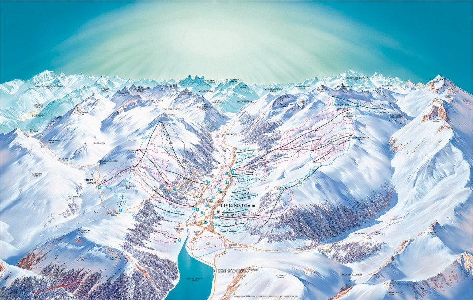

Dysponujemy 40 kilometrami tras o różnym stopniu trudności, od tych
łagodnie nachylonych aż po trasy posiadające homologację
Międzynarodowej Federacji Narciarskiej FIS. Coś dla siebie znajdą
tutaj również biegacze narciarscy, dla których przygotowywanych jest
kilkanaście kilometrów tras biegowych. Nasz ośrodek góruje w
rankingach jakości i przyciąga narciarzy z całej Europy.
